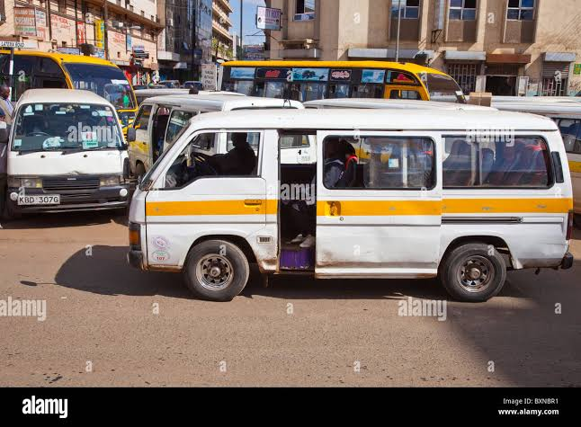

What Is A Matatu?
A matatu is a passenger vehicle commonly used for public transportation in Kenya. Matatus operate in towns, cities and along routes connecting different parts of the country.

Types Of Matatus
MINIBUSES
Minibuses are commonly used to transport several passengers at once. They can be found on both short urban routes and longer journeys.
VANS
Vans are another common type of matatu. They are often used on busy urban routes and can carry passengers between neighbourhoods and town centres.
LONG-DISTANCE MATATUS
Some matatus operate between towns and cities. These vehicles provide transportation for people travelling longer distances.
Matatu Designs
One of the most noticeable features of Kenyan matatus is their appearance. Owners and designers often use bright colours, artwork, graphics and interesting names to make their vehicles stand out.
Some matatus also have customised seats, lighting, sound systems and other interior decorations.
SEE NGANYA DESIGNS